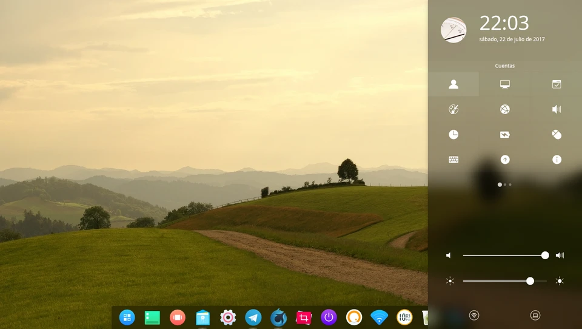
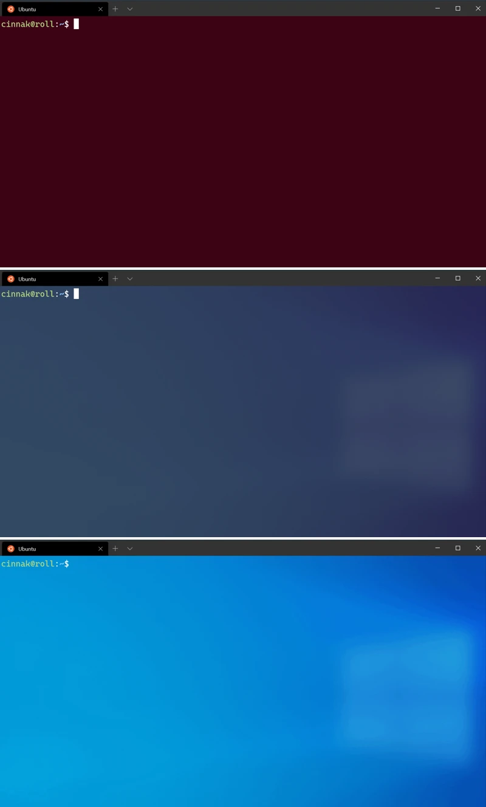
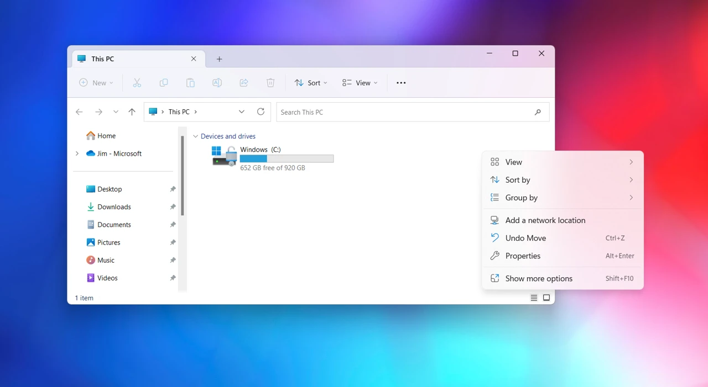
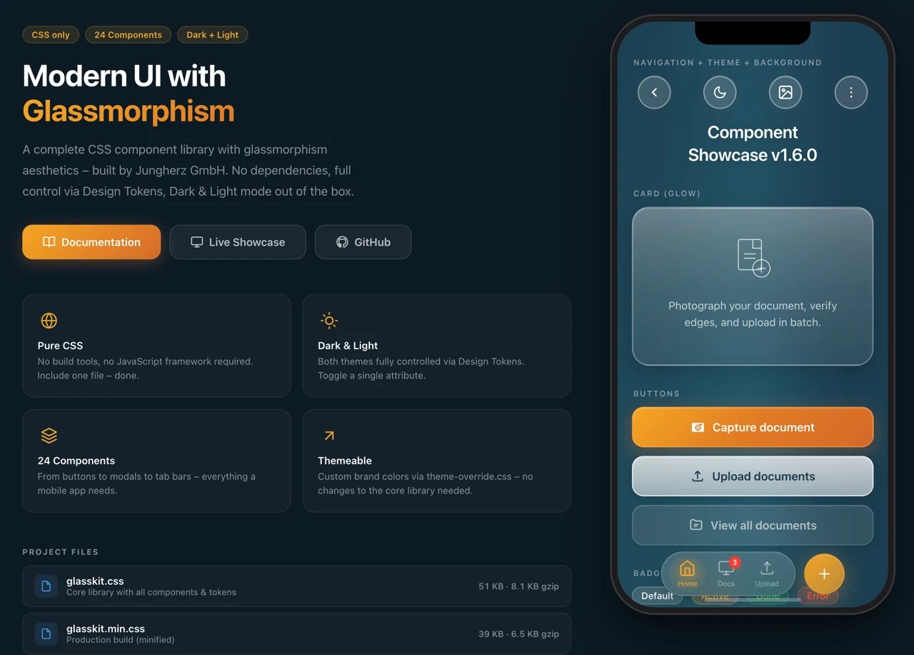
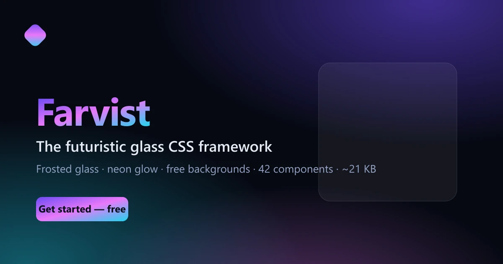

先行する実装
呼称が広がる前の先行例。開発元が「ぼかしと透明」を打ち出した版です。右側の設定パネルを通して、丘の緑と空の明るさがゆるく続いています。
作品・制作の例7件を紹介しています。実作品画像5点、参照・関連画像0点。画像の収集は継続中です。
現代の画面表現・説明用の分類
Glassmorphism
半透明の板の向こうに、背景の色がぼんやり見えます。すりガラスのような重なりを使う画面表現です。前にある操作部分と、後ろの内容の関係を見せられます。
実作品を見る

画像を表示できませんでした。下の出典ページで確認できます。
deepin 開発チーム / 2017年
呼称が広がる前の先行例。開発元が「ぼかしと透明」を打ち出した版です。右側の設定パネルを通して、丘の緑と空の明るさがゆるく続いています。
DSan（画面記録）、Deepin Wuhan（ソフトウェア・アイコン）、Christoph Michels（壁紙）／WebPに変換
出典で作品・資料を見る ↗実作品を見る

画像を表示できませんでした。下の出典ページで確認できます。
マイクロソフト、Windows Terminal 開発チーム / 2022年版の開発資料
同じ窓でも、不透明度を下げると背後の壁紙の青が浮かびます。公式の設定デモの冒頭・途中・末尾を、上から順に並べています。
Microsoft Corporation／公式動画の第1・41・72フレームを縦に配置／WebPに変換
出典で作品・資料を見る ↗実作品を見る

画像を表示できませんでした。下の出典ページで確認できます。
マイクロソフト / 2024年版の開発資料
メニューの左側は白く、窓からはみ出す右側には背後のピンクが透けます。文字を読む面を残しながら、メニューが手前に浮いたことを示す実装です。
Microsoft Corporation／Microsoft Learn／WebPに変換
出典で作品・資料を見る ↗実作品を見る

画像を表示できませんでした。下の出典ページで確認できます。
Jungherz GmbH / 2026年の公開版
作者がグラスモーフィズムのCSS部品集として公開した例です。端末の中でボタン、カード、操作欄の面を見比べると、どの部品にも細い縁と淡い光が入っています。
Copyright (c) 2026 Jungherz GmbH／WebPに変換
出典で作品・資料を見る ↗実作品を見る

画像を表示できませんでした。下の出典ページで確認できます。
Farvist／Florian Kürsten / 2026年の公開版
作者がグラスモーフィズムを掲げたCSSフレームワークの公式見本です。右の面は暗い地とよく似た色ですが、光が透ける部分と細い縁で境目が見えます。
Copyright (c) 2026 Farvist／WebPに変換
出典で作品・資料を見る ↗歴史上の定評ある代表作と断定する選定ではありません。制作側の説明や教材から、表現が確かめられる例を区別して掲載しています。
参考ツール
透明度やぼかしを調整する実装例です。
作品・資料の出典を見る ↗原題：Glassmorphism CSS Generator
ハイプフォー／スクエアプラネット / 継続公開／初公開年未確認 / CSS生成ツール
日本語の見出しは読みやすさのための呼び名・説明名です。原題は記録欄に示しています。
画像の転載条件は未確認。出典の公開は転載許諾ではありません。
参考教材（同じ製品の背景を透かす例）
アプリの後ろにある画面をぼかして見せます。
作品・資料の出典を見る ↗原題：Acrylic：Background acrylic
マイクロソフト / 継続更新の技術資料 / 画面素材・実装例
日本語の見出しは読みやすさのための呼び名・説明名です。原題は記録欄に示しています。
画像の転載条件は未確認。出典の公開は転載許諾ではありません。
参考教材（同じ製品の内部を透かす例）
アプリの中の重なりを見せます。外側の背景を透かす例と区別します。
作品・資料の出典を見る ↗原題：Acrylic：In-app acrylic
マイクロソフト / 継続更新の技術資料 / 画面素材・実装例
日本語の見出しは読みやすさのための呼び名・説明名です。原題は記録欄に示しています。
画像の転載条件は未確認。出典の公開は転載許諾ではありません。
先行する実装
呼称が広がる前の先行例。開発元が「ぼかしと透明」を打ち出した版です。右側の設定パネルを通して、丘の緑と空の明るさがゆるく続いています。
作品・資料の出典を見る ↗原題：deepin 15.4 Control Center
deepin 開発チーム / 2017年 / 先行する実装
公式の実装例
同じ窓でも、不透明度を下げると背後の壁紙の青が浮かびます。公式の設定デモの冒頭・途中・末尾を、上から順に並べています。
作品・資料の出典を見る ↗原題：Windows Terminal — Acrylic opacity
マイクロソフト、Windows Terminal 開発チーム / 2022年版の開発資料 / 公式の実装例
様式を掲げた実装例
作者がグラスモーフィズムのCSS部品集として公開した例です。端末の中でボタン、カード、操作欄の面を見比べると、どの部品にも細い縁と淡い光が入っています。
作品・資料の出典を見る ↗原題：GlassKit
Jungherz GmbH / 2026年の公開版 / 様式を掲げた実装例
様式を掲げた実装例
作者がグラスモーフィズムを掲げたCSSフレームワークの公式見本です。右の面は暗い地とよく似た色ですが、光が透ける部分と細い縁で境目が見えます。
作品・資料の出典を見る ↗原題：Farvist
Farvist／Florian Kürsten / 2026年の公開版 / 様式を掲げた実装例
ガラスらしい画面は一つの運動ではありません。呼び名が広まったことと、各社の半透明表現が開発されたことは区別します。マイクロソフトのアクリリックも、会社独自の設計ルールを持っています。
背景色が透けるため、置く場所で文字の見え方が変わります。
どの背景の上でも文字が読めるかを確かめます。
背景のぼかし、面の透明度、縁の明るさを分けて見ます。
重ねすぎると、前後関係がかえって分かりにくくなります。
アクリリックは具体的な製品の素材表現です。一般的な見た目の呼び名と同一視しません。同じように透けて見えても、何を透かし、どう重ねるかは製品によって異なります。
透ける表現を使わない設定や、処理が重い機器での代わりの表示も用意することが大切です。
半透明の面の向こうに、背景の色や輪郭がどの程度残るか。デスクトップの実画面と開発者が公開した部品を見比べます。
作品・制作の例7件を紹介しています。実作品画像5点、参照・関連画像0点。画像の収集は継続中です。